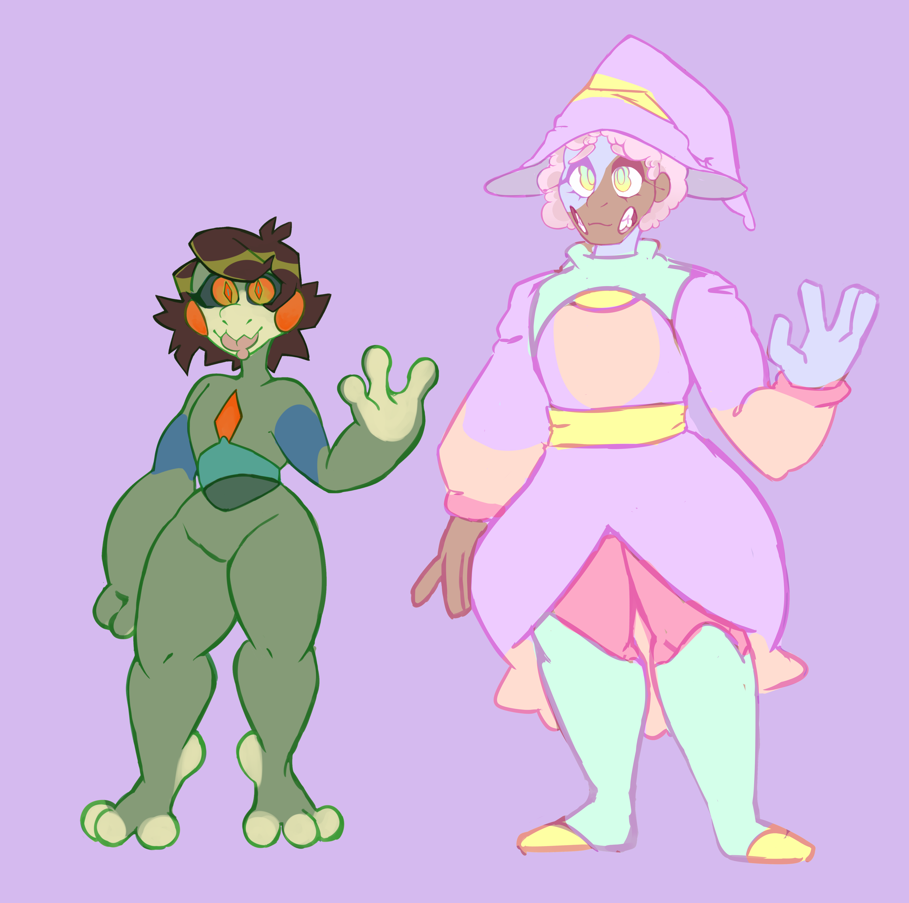
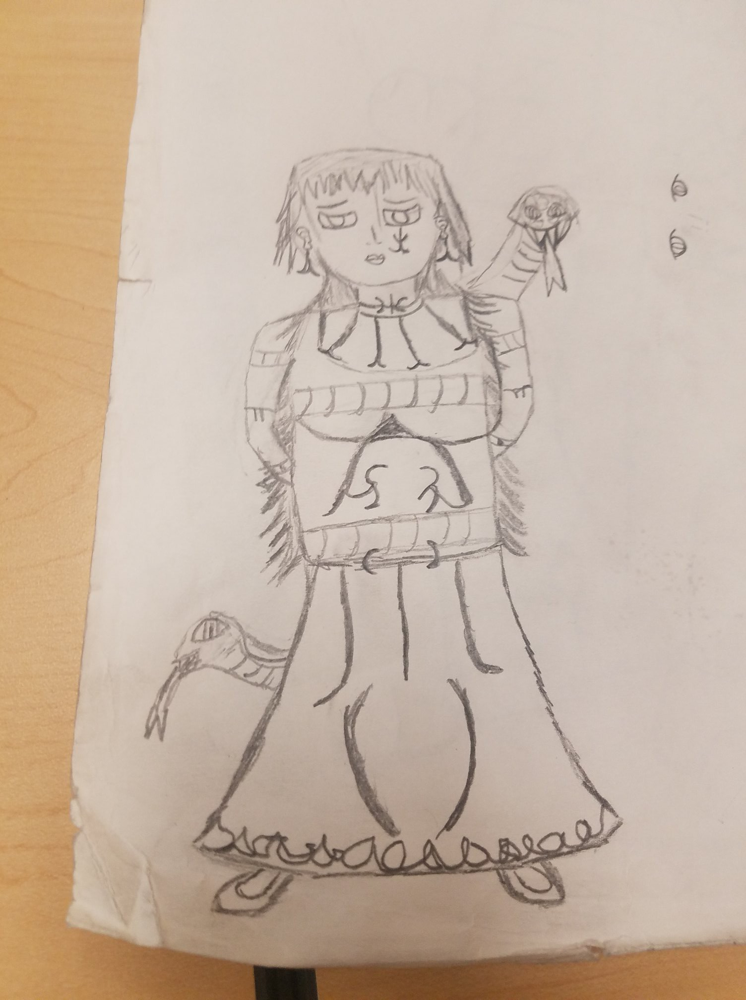

Characters
 On The Right: Madame Lave: (Open to change)
Voodoo abilities: Dark Healing( Using his medical skills he has the ability to prevent death upon the one who is marked making them immune to all damage for a certain period of time)
Madame Lave, from India, Much is unknown about her she is deemed to be very beautiful. She seemingly captivates everybody who watches her and all who see her appear to be under a spell. In all actuality, this is Lave’s power. Her talent has allowed her to live centuries. She specializes in transmogrification witchcraft. Madame Lave focused most of her time into creating potions of beauty and changing the human body's physiology. Her practice has raised her death toll, but she feels it is all for good reason. She caught the eye of C’thal through her progress in transmogrification. Word of her abilities has spread all the way to the caribbean.
On The Left: Lucas Dark (Uven): (Open to change)
Voodoo abilities: Chicken Dance( Using the power of Hypnosis causes confusion making controls to flip and change constantly)
A silent killer in the middle east, Uven became interested in witchcraft when he stumbled upon a wizarding book in his teenage years. Uven craved power and sought ways to control people. Although he was quiet, Uven was gifted with a piercing stare. His eyes could see into the soul. Eventually, Lucas went from practicing his piercing stare to somehow linking runic magic into his practice of witchcraft. He carved runes into his eyelids in order to preserve his magical abilities and create a feedback loop of magical energy. Uven’s powerful aura, due to this feedback loop, attracted the attention of C’thal.

Lola
Voodoo abilities: Snake Charmer(Using her pet snake named bobo to summon on the field in order to constrict and/or eat the summoner for a gruesome death)
75 year old witch from Binghamton, NY. A born witch, Lola was born with the ability to talk to snakes but was shunned from her family for having such abilities. Growing up, she went to louisiana to learn her snake whispering skills for self defense and eventually found her pet snake bobo(Hydrophis belcheri). At age 15, Lola became so adept at her craft that she ruled New Orleans using bobo powerful venom wiping out the entire town. She is rather hot headed, often making very rash and obscene decisions. She abhors being told what to do and will rebel at the very site of control. Her quick advancement in the skill of witchcraft caught the eyes of some very powerful beings.